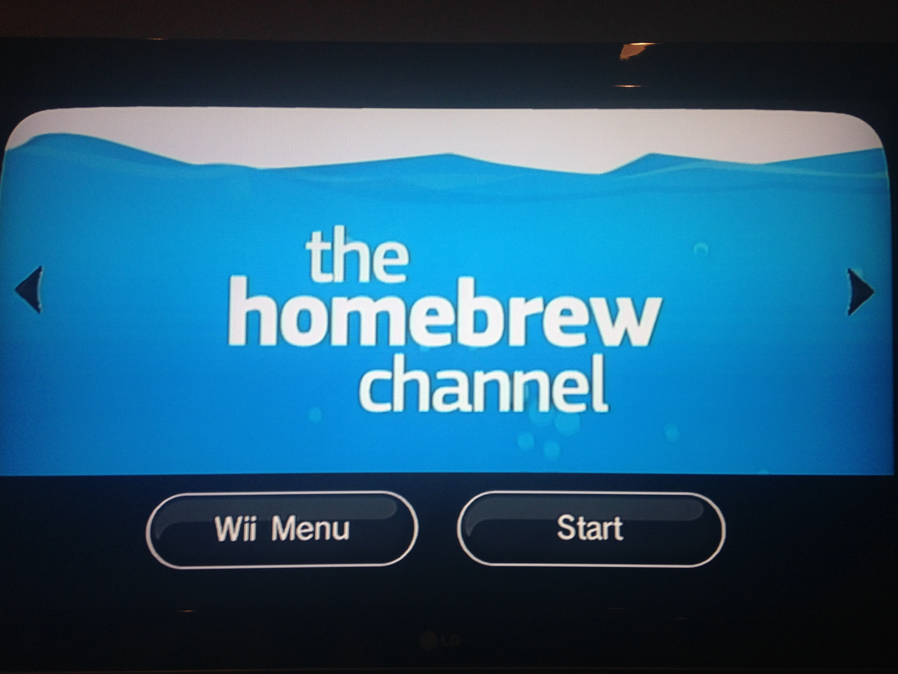

Wiiflow
A USB Loader.
WADDisc Channel
in a different spot on my system
WADThe Homebrew Channel
Loads Homebrew from your SD/SDHC card.
WADRiivolution
Game patcher.
WADSuper Mario War
Fight other Marios to become the winner.
WADCTGP Revolution
Mario Kart Wii Mod
WAD (Available in the application)WAD Manager
Installs Wii Channels/Forwarders/WADS.
WADWiiXplorer
File Explorer for the Wii with a shit ton of features.
WADHomebrew Browser
Download homebrew OTA.
WADCleanRip
Rip discs.
WADWindows 98
DOSBox for the Wii prepackaged with Windows 98.
WAD (unavailable)WiiBrowser
Internet Browser for the Wii with extra features. (doesn't work too too well)
WADGecko
Cheats for games.
WADDuck Hunt

Duck Hunt port.
WADWiiEarth

Earth view on the Wii.
WADRed Homebrew Channel
does nothing
WAD (not working)MPlayer CE
Loads DVDs. does nothing on my wii
WAD (not working)MyMenuify

An awesome theme manager!
WAD